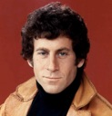

David Starsky
Inspecteur de police, ancien boxeur et pilote de course - Bay City
Expérience professionnelle
- De 1973 à 1975 : Pilote de course
- De 1976 à 1977: Boxeur professionnel WBA
- 1978 à aujourd'hui : Inspecteur de police
Compétences professionnelles
- Résolution d'enquêtes
- Pilote formula drift
- Fin connaisseur de la ville sans smartphone ni gps
- Acteur à temps plein
Formation
- Ecole de police de Los Angeles
- Baccalauréat - Tampa Bay
Langues et informatique
- Anglais, Espagnol
- Pack office, Html5, Css3